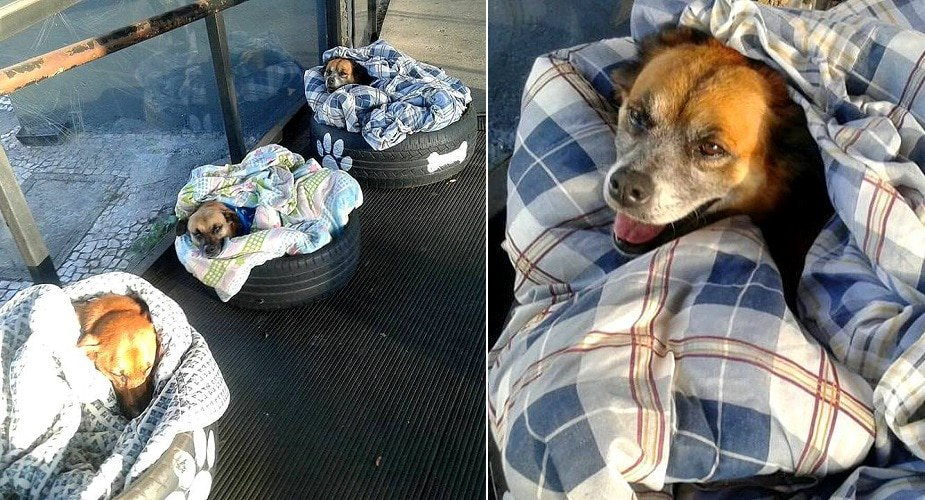

Brazilian Bus Station Set Up Beds to Keep Local Street Dogs Warm This Winter


As temperatures are on the rise in the northern hemisphere, they’re doing just the opposite in the southern hemisphere. That’s why a bus station in Brazil has set up nice, comfy beds for the street dogs who come there to warm up.
Max, Pitoco, and Zoinho have things a little better than most street dogs – they are cared for by staff members at a Barreirinha bus terminal in Curitiba. They are given food and water and beds made from repurposed tires.

Dog lover and rescuer
Fabiane Rosa noticed the sweet arrangement and the looks of contentment on the dogs’ faces and posted about them on Facebook.
“I do not tire of praising the Neusa dos Santos and other volunteers who provide these angels with a warm bed in the cold, food every day, fresh water, security,” she said.

She encouraged people to speak out against animal abuse and the abandonment of dogs in Brazil.
“You may be the only hope of these silent suffering angels. These communal dogs have a much more dignified life than some who are victims of maltreatment and neglect, hidden behind the walls,” Rosa advocated. “And that people understand, this world is not the privilege of humans, God created animals to teach us to love without conditions.”